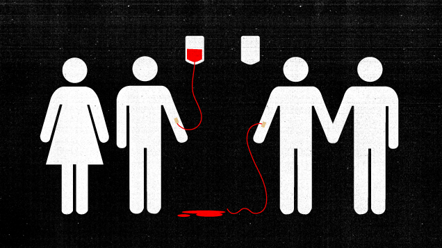
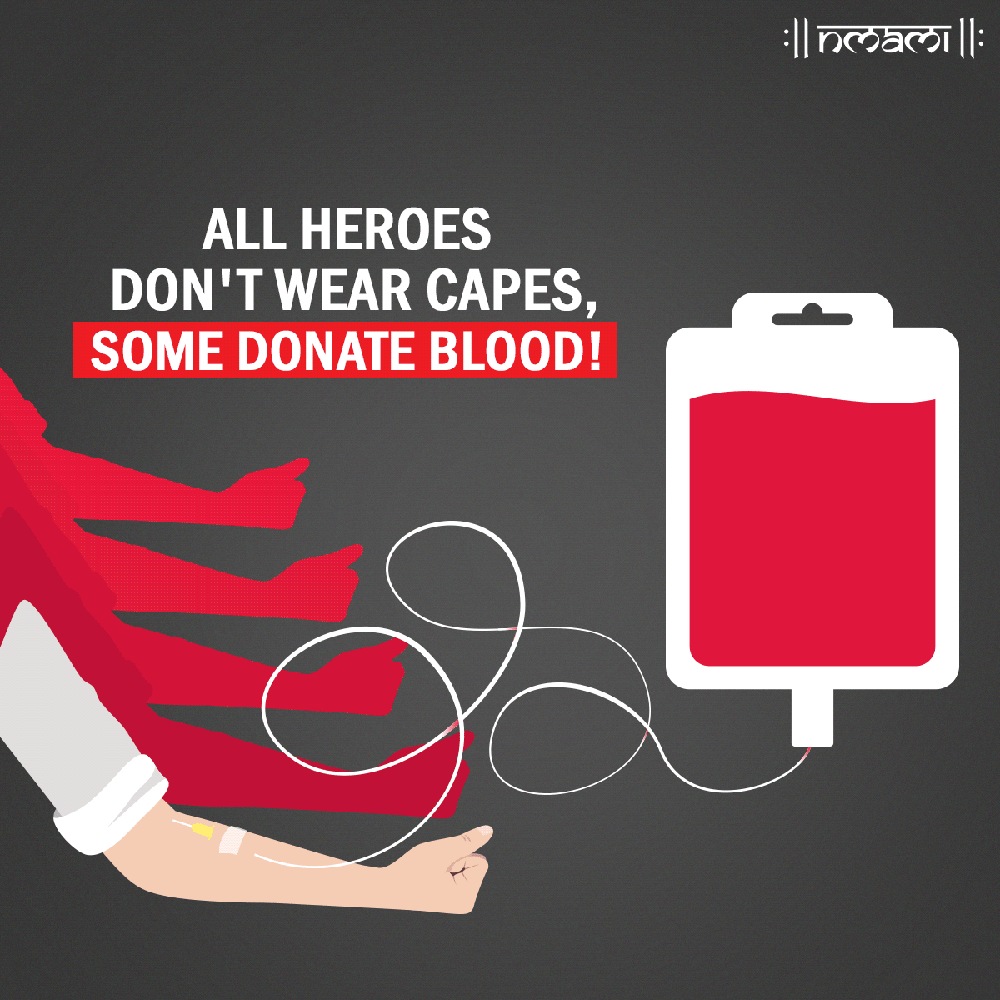

Blood donation is a voluntary procedure that can help save lives. There are several types of blood donation. Each type helps meet different medical needs. Whole blood donation is the most common type of blood donation. During this donation, you donate about a pint (about half a liter) of whole blood. The blood is then separated into its components — red cells, plasma, and sometimes platelets.
Millions of people need blood transfusions each year. Some may need blood during surgery. Others depend on it after an accident or because they have a disease that requires certain parts of blood. Blood donation makes all of this possible. There is no substitute for human blood — all transfusions use blood from a donor.

Risks
Blood donation is safe. New, sterile disposable equipment is used for each donor, so there's no risk of getting a bloodborne infection by donating blood. Most healthy adults can donate a pint (about half a liter) safely, without health risks. Within a few days of a blood donation, your body replaces the lost fluids. And after two weeks, your body replaces the lost red blood cells.
How You Prepare
- Eligibility Requirements
- In good health.
- At least 16 or 17 years old, depending on your state law. Some states allow minors to donate with parental permission.
- At least 110 pounds (about 50 kilograms).
- Able to pass the physical and health-history assessments.
- Food and Medications
- Get plenty of sleep the night before.
- Eat a healthy meal and avoid fatty foods.
- Drink plenty of water before donating.
- Check with a healthcare professional if you're on medications.
- Wear a shirt with sleeves that can be rolled up.
Post-Donation Care
- Drink extra fluids.
- Avoid strenuous physical activity for 24 hours.
- If lightheaded, lie down with your feet up.
- Keep your bandage on for the next four hours.
Testing
Your blood will be tested to determine your blood type and Rh factor. Additionally, it will be screened for bloodborne diseases such as hepatitis and HIV. If all tests are negative, the blood is cleared for use.
Importance of Blood Donation
Did you know? You can save up to three lives with a single blood donation. This noble act helps countless patients in need of blood transfusions worldwide.
